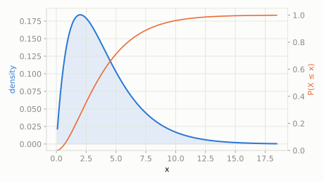

Four toy robots each wobble left-right by a random, bell-shaped amount. A scientist adds up the squares of all four wobbles to get one 'total clumsiness' score.
What's the chance the total clumsiness score comes out above 9?
scipy.stats.chi2
Take several independent standard-Normal 'wobbles', square each one (so they're all positive), and add them up -- the total follows a Chi-square distribution. It measures total squared deviation, which is exactly what's needed to test whether observed data matches an expected pattern.
| parameter | default used here | meaning |
|---|---|---|
df | 4 | degrees of freedom -- how many squared normals are summed |
Four toy robots each wobble left-right by a random, bell-shaped amount. A scientist adds up the squares of all four wobbles to get one 'total clumsiness' score.
What's the chance the total clumsiness score comes out above 9?
scipy.statsimport scipy.stats as stats
import numpy as np
dist = stats.chi2(df=4)
print('P(total clumsiness > 9):', round(dist.sf(9), 4))
print('expected total clumsiness:', dist.mean())